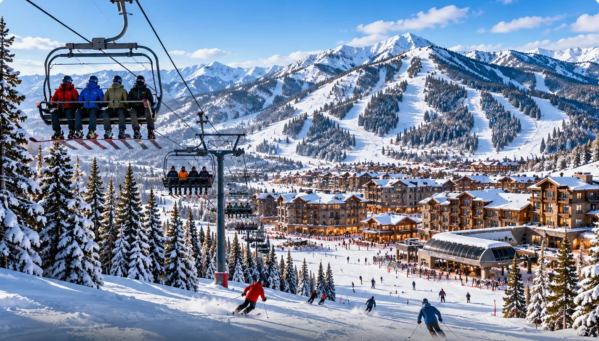

Park City runs from around late November to mid April in a normal year. Picking the right part of that window matters more than most people realise.

Exact opening and closing dates move each season with conditions, so confirm them for your year. The shape of the season, though, is consistent.
Month by month
| Period | Snow | Crowds | Suits |
|---|---|---|---|
| Late Nov to mid Dec | Building, limited terrain | Quiet | Bargain hunters, early-season legs |
| Christmas and New Year | Usually good | Very busy | Families with no flexibility, at peak prices |
| January | Often excellent | Quieter, except Sundance | Best snow-to-crowd ratio of the season |
| February | Usually the deepest base | Busiest, peaking at Presidents' Week | Reliable conditions, booked far ahead |
| March | Good, warmer, longer days | Moderate, rising at spring break | Mixed groups and families wanting sun |
| Early April | Spring conditions, variable | Quiet | Cheap skiing, late starts, soft afternoons |
The trade you are making
Snow quality and crowd levels move in opposite directions for most of the season. January tends to offer the best combination, with reliable snow and fewer people, which is why experienced skiers favour it.
February has the deepest base and the most dependable conditions, and it is the month when Presidents' Week makes the mountain and the lodging market as busy as they get all year.
Why families take February anyway
Because school calendars decide it. A family that can only travel during the February break is not choosing between January and February, it is choosing between booking early and paying more later.
If your dates are fixed by a school calendar, the whole question becomes when to book rather than when to go.
Dates worth knowing for 2027
- Presidents' Day: Monday 15 February 2027, with the ski week running Saturday 13 to Saturday 20 February.
- The Sundance Film Festival: January, which transforms Park City town and affects traffic, prices and availability.
- Spring break: March, spread across several weeks rather than concentrated into one, which makes it busy without being Presidents' Week.
Mid January, avoiding Sundance, is the sweet spot for snow against crowds. If you do not have flexibility, February is a good month to be stuck with, provided you book it early.
Common questions
When does the Park City ski season run?
Roughly late November to mid April in a normal year, with exact opening and closing dates depending on conditions each season.
What is the best month to ski Park City?
January often gives the best combination of reliable snow and manageable crowds. February usually has the deepest base but is the busiest month, peaking at Presidents' Week.
Is March a good time to ski Park City?
Yes, with warmer weather, longer days and generally good conditions. Crowds rise during spring break, though that is spread across several weeks rather than concentrated into one.
The villa this guide comes from
We own a Premier Two-Bedroom Villa inside Westgate Park City Resort, in Canyons Village. It is 1,100 square feet, two king bedrooms and two queen sleeper sofas, so it sleeps eight in one unit. Full kitchen with a centre island, two bathrooms, in-unit laundry, and a short walk to the Red Pine Gondola.
It is available for Presidents' Week 2027, 13 to 20 February, and we rent it ourselves rather than through an agency.